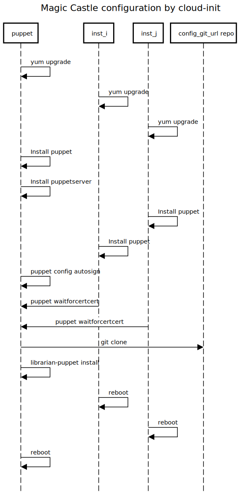

Magic Castle Sequence Diagrams
The following sequence diagrams illustrate the inner working of Magic Castle
once terraform apply is called. Some details were left out of the diagrams,
but every diagram is followed by references to the code files that were used
to build it.
1. Cluster creation

Notes
puppet-magic_castle.gitdoes not have to refer toComputeCanada/puppet-magic_castle.gitrepo. Users can use their own fork. See the developer documentation for more details.
References
magic_castle:/common/design/main.tfmagic_castle:/openstack/network-1.tfmagic_castle:/openstack/network-2.tfmagic_castle:/common/configuration/main.tfmagic_castle:/openstack/infrastructure.tfmagic_castle:/common/provision/main.tfmagic_castle:/dns/cloudflare/main.tfmagic_castle:/dns/acme/main.tf
2. Configuration with cloud-init

Notes
config_git_url repodoes not have to refer toComputeCanada/puppet-magic_castle.gitrepo. Users can use their own fork. See the developer documentation for more details.- While the diagram represents each step as completed sequentially, each node provisioning is independent. The only step that requires synchronisation between nodes and the management node is the puppet certificate generation.
References
3. Configuration with Puppet
References
puppet-magic_castle:/manifests/site.pppuppet-magic_castle:/profile/manifests/base.pppuppet-magic_castle:/profile/manifests/consul.pppuppet-magic_castle:/profile/manifests/freeipa.pp